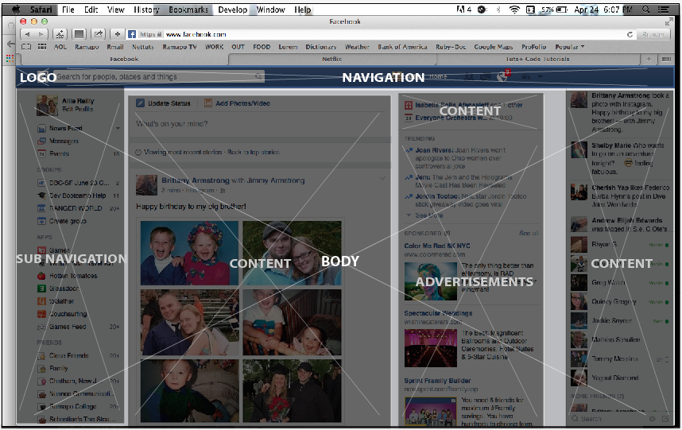
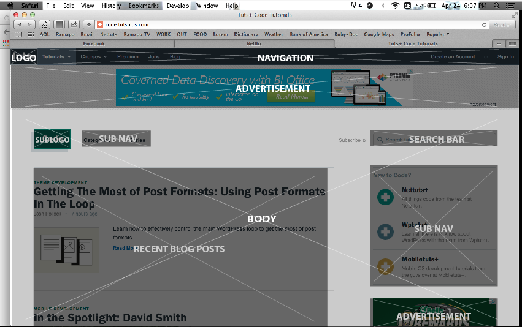
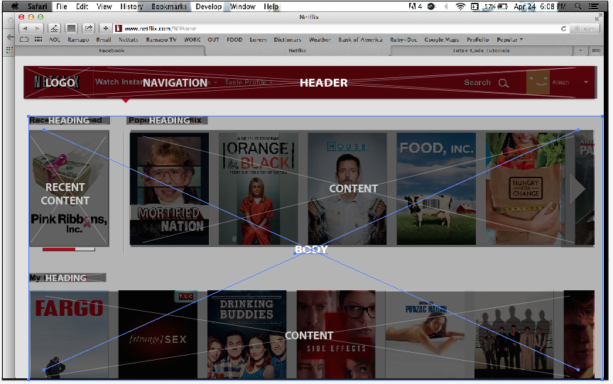

Week One Technical Blog
I consider facebook to be one of my favorite sites because I use it often. Its a form of amusement for me rather than a social use. The first thing my eye is drawn to is my notifications, because they are in red. Then it would be the posts. Facebook is simple, somewhat cluttered, and rather easy to navigate and browse. After being on the site for awhile, it can get boring, unless there are new posts that entertain me. This site is constantly advertising.
Nettus
I enjoy nettus because it has great tutorials and all the information you need when it comes to coding, design, ect. I have the premium membership which has helped me learn a lot in terms of coding. The site is basic. There is the main site, then there are sub sites (web design, photoshop ect), and the premium site. It is pretty easy to navigate, all you have to do is find the sub site, then the navigation breaks down what you need into categories. There is a lot of information and blog posts so I usually just do a search within the site to find what I want. The first thing I see when I go to the site is the navigation. There are advertisements as well. I don't tend to get too bored, I use the site for what I need, but if I am browsing, there is so much information that I don't think it could possibly get old. The site is simple, spacious, and to the point.
Netflix
I enjoy netflix because I like to watch movies and TV shows. It had fast loading times and no advertisements. The first thing my eye is drawn to are the suggested popular movies. The site is somewhat easy to navigate, they cut the navigation down to be the most basic its been, which I don't like as much. The site is simple, but the design layout is very visually appealing. You really can't get bored on this website, there are tons of tv shows and movies.
